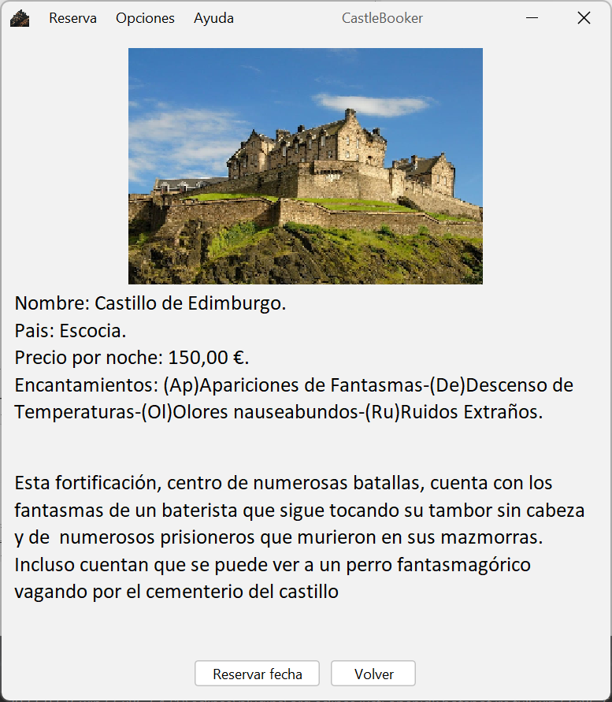

Cuando la ventana con la informacion de los castillos se inicie, aparecerá algo parecido a la siguiente imagen
Se podrá desplazar por la pantalla de con la rueda del raton o arrastrando la barra lateral de la derecha
Para que la búsqueda sea más comoda se podrá filtra según tus gustos o precio máximo por noche
Podrá encontra más informacion sobre el filtro en la siguiente sección
Una vez encontrado el castillo ideal, al clicar sobre este se mostra su información en una ventana y
su precio por noche
La imagen a mostrar será algo parecido a la siguiente:
